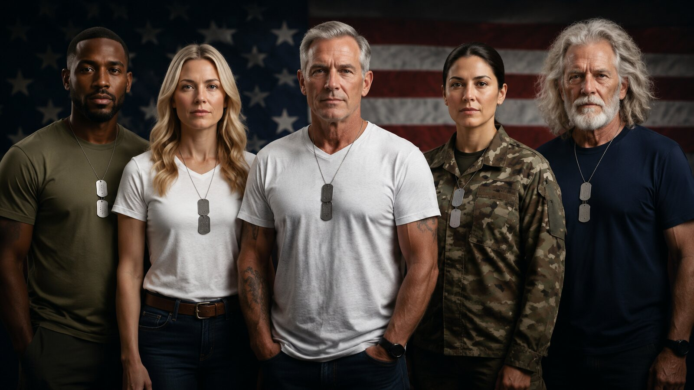
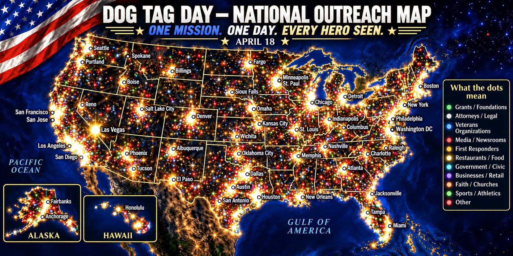
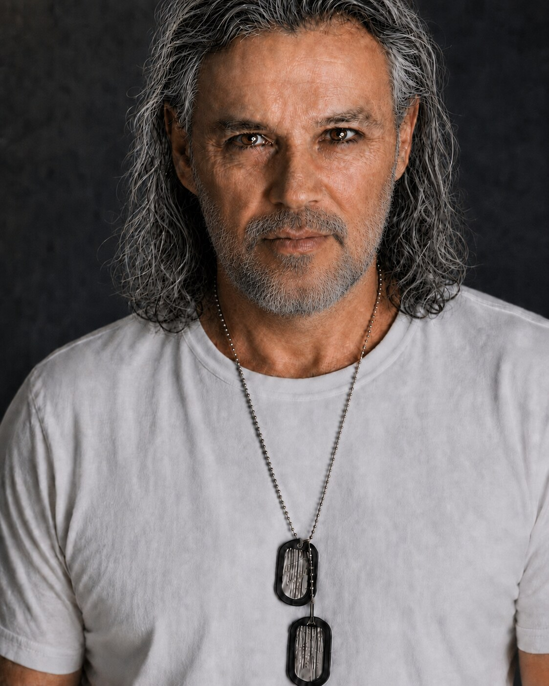

Identity • Brotherhood • Honor
DOG TAG DAY
APRIL 18
APRIL 18
Once the uniform comes off, military service can become invisible. Dog Tag Day gives America one visible way to say: I see you.
Swipe left or peel the curled corner ›

Why Dog Tag Day Exists
Veterans should not become invisible.
Millions of veterans live, work, shop, raise families, and stand beside us every day. Often, we never know they served.
17.2MLIVING U.S. VETERANS
What You Do on April 18
Four simple actions.
1Wear the tagsIf you served, wear or display your military dog tags.
2Honor someoneFamilies may display the tags of someone they love or remember.
3Acknowledge oneA nod, handshake, fist to the heart, or simply “I see you.”
4Share the storyWith permission, tell the story behind the tags.
What We Do All Year
We show up. We listen.
Preserve stories
Record veteran stories and service histories with permission.
Record veteran stories and service histories with permission.
Connect resources
Guide veterans who ask for help toward trusted resources.
Guide veterans who ask for help toward trusted resources.
Build April 18
Help communities participate meaningfully across America.
Help communities participate meaningfully across America.
Across America
The effort is spreading.


From the Founder
Put them on. Acknowledge one.
“Dog Tag Day exists so veterans and their stories are seen, heard, and remembered.”
RONNIE SHURE
Founder & CEO
Dog Tag Day Foundation
Support the Mission
Help a veteran be seen.
Your support helps preserve stories, build April 18 participation, and connect veterans who ask for help with trusted resources.